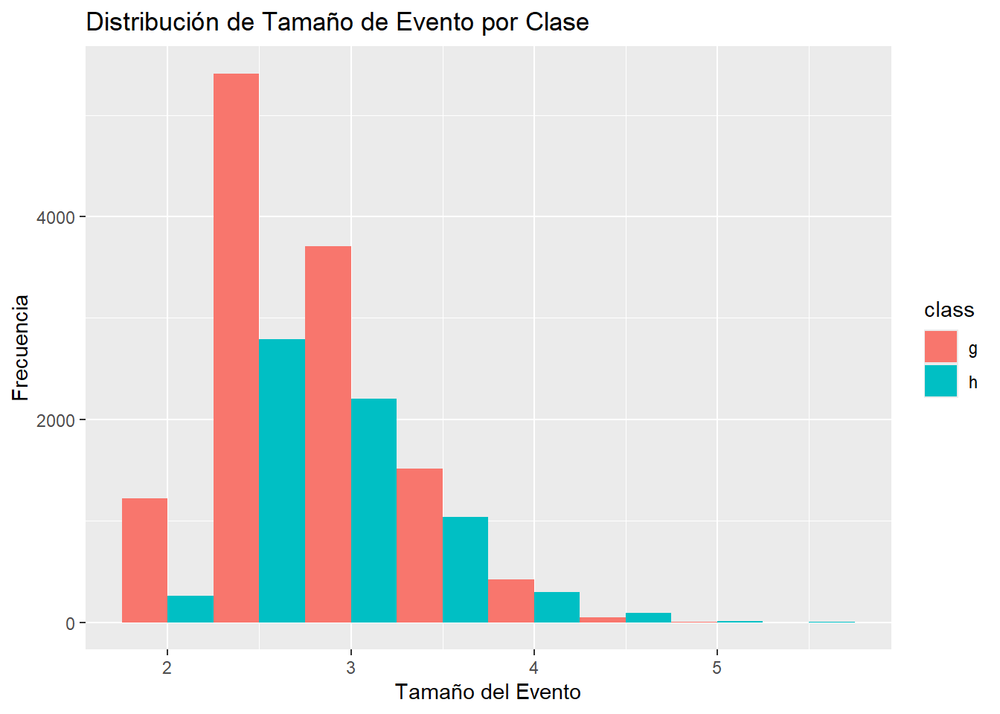
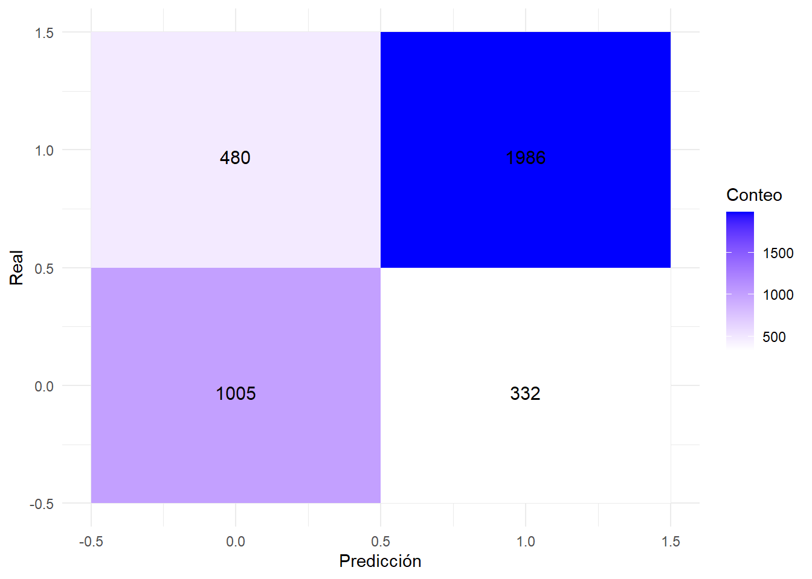
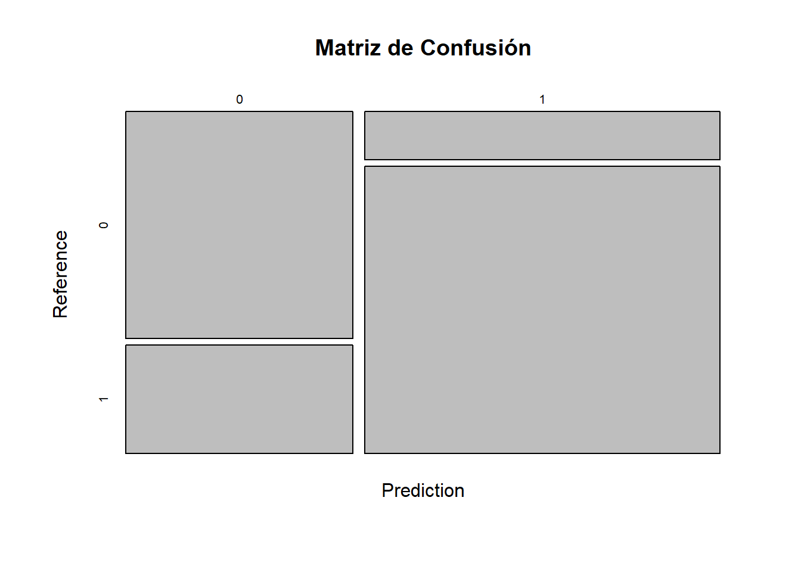
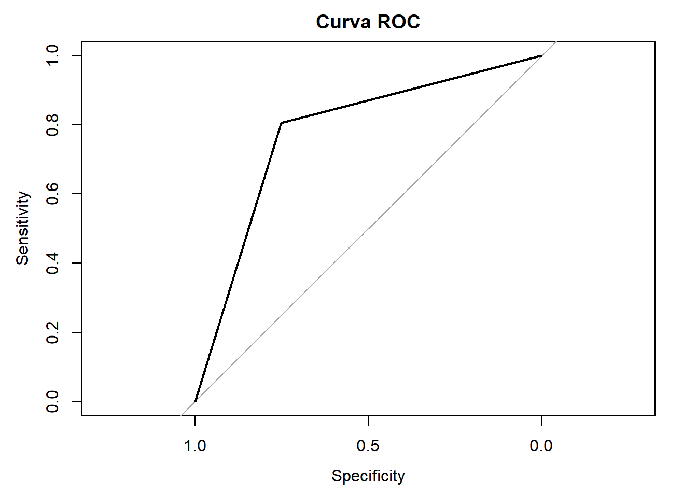

Show the code
# Cargar librerías necesarias DMWR para equilibrar las clases
library(dplyr)
library(ggplot2)
library(caret)
library(DMwR) # Para el balanceo de clases
library(readr) # Para leer el archivo CSVEl dataset MAGIC Gamma Telescope contiene eventos de rayos gamma y eventos de fondo hadrónicos. El problema consiste en diferenciar entre estos dos tipos de eventos utilizando las características medidas por el telescopio
fLength: Longitud del eje mayor elíptico del evento.fWidth: Ancho del eje mayor elíptico del evento.fSize: Tamaño del evento en términos de número de píxeles.fConc: Concentración del evento (cuán concentrado está el evento dentro del área de detección).fConc1: Concentración en un área más pequeña del evento.fConc2: Otra medida de concentración.fAlpha: Ángulo entre el eje mayor del evento y la dirección del impacto.fDist: Distancia del evento al centro de la imagen.fShower: Forma del evento en términos de dispersión.fRlength: Longitud de la línea recta a través del evento.class: Etiqueta del evento, donde g representa rayos gamma y h representa eventos hadrónicos.# Cargar librerías necesarias DMWR para equilibrar las clases
library(dplyr)
library(ggplot2)
library(caret)
library(DMwR) # Para el balanceo de clases
library(readr) # Para leer el archivo CSV# los nombres de las columnas
cols <- c("fLength", "fWidth", "fSize", "fConc", "fConc1", "fAsym", "fM3Long", "fM3Trans", "fAlpha", "fDist", "class")
# Cargar el dataset y etiqueta las columnas
df <- read.csv("magic04.data", header = FALSE, col.names = cols)# Crear una copia para análisis exploratorio
df_exploratory <- df# observacion visualizacion datos
summary(df_exploratory[c("fSize", "fConc")]) # Seleccionar variables específicas para summary() fSize fConc
Min. :1.941 Min. :0.0131
1st Qu.:2.477 1st Qu.:0.2358
Median :2.740 Median :0.3542
Mean :2.825 Mean :0.3803
3rd Qu.:3.102 3rd Qu.:0.5037
Max. :5.323 Max. :0.8930 str(df_exploratory[c("fSize", "fConc")]) # Seleccionar variables específicas para str()'data.frame': 19020 obs. of 2 variables:
$ fSize: num 2.64 2.52 4.06 2.34 3.16 ...
$ fConc: num 0.3918 0.5303 0.0374 0.6147 0.3168 ...# Visualización sencilla
ggplot(df_exploratory, aes(x = fSize, fill = class)) +
geom_histogram(binwidth = 0.5, position = "dodge") +
labs(title = "Distribución de Tamaño de Evento por Clase",
x = "Tamaño del Evento",
y = "Frecuencia")
fSize: La media 2.83 es un poco mayor que la mediana 2.740, indicando tamaños tendiendo hacia valores más grandes, el máximo es 5.323.
fConc: La media 0.38 es ligeramente mayor que la mediana (0.3542), mostrando que la mayoría de las concentraciones están en el rango inferior, el máximo es 0.8930.
# Convertir la columna 'class' a valores binarios
df$class <- as.factor(ifelse(df$class == "g", 1, 0))tranformamos la columna class a valores binarios (1 y 0) para simplificar el análisis y facilitar el uso en modelos de machine learning, que generalmente algunos requieren datos numéricos o cuantitativos en lugar de categóricos.
# Dividir los datos en entrenamiento y prueba
set.seed(123)
trainIndex <- createDataPartition(df$class, p = .8, list = FALSE)
trainData <- df[trainIndex,]
testData <- df[-trainIndex,]# Aplicar SMOTE para balancear el conjunto de entrenamiento
train_balanced <- SMOTE(class ~ ., data = trainData, perc.over = 100, perc.under = 200)Balancear previene sesgo y mejora precisión.
# Escalar el conjunto balanceado
preProc <- preProcess(train_balanced[, -ncol(train_balanced)], method = c("center", "scale"))
train_balanced_scaled <- predict(preProc, train_balanced[, -ncol(train_balanced)])
train_balanced_scaled <- cbind(train_balanced_scaled, class = train_balanced$class)# Preparar los datos de prueba (escalar)
testData_scaled <- predict(preProc, testData[, -ncol(testData)])
testData_scaled <- cbind(testData_scaled, class = testData$class)Entrenamiento del Modelo
# k es el número de vecinos, valores para k
tune_grid <- expand.grid(k = c(1, 3, 5, 7, 9))
# Entrenar el modelo KNN con validación cruzada
knn_model <- train(class ~ ., data = train_balanced_scaled, method = "knn",
trControl = trainControl(method = "cv"),
tuneGrid = tune_grid)# Mostrar el mejor valor de k y los resultados
print(knn_model)k-Nearest Neighbors
21404 samples
10 predictor
2 classes: '0', '1'
No pre-processing
Resampling: Cross-Validated (10 fold)
Summary of sample sizes: 19264, 19264, 19263, 19263, 19264, 19264, ...
Resampling results across tuning parameters:
k Accuracy Kappa
1 0.9449640 0.8899281
3 0.8857224 0.7714452
5 0.8720807 0.7441621
7 0.8607272 0.7214552
9 0.8530180 0.7060364
Accuracy was used to select the optimal model using the largest value.
The final value used for the model was k = 1.# Hacer predicciones con el modelo entrenado
predictions <- predict(knn_model, newdata = testData_scaled)# Evaluar el modelo
conf_matrix <- confusionMatrix(predictions, testData_scaled$class)
print(conf_matrix)Confusion Matrix and Statistics
Reference
Prediction 0 1
0 1005 480
1 332 1986
Accuracy : 0.7865
95% CI : (0.7731, 0.7994)
No Information Rate : 0.6484
P-Value [Acc > NIR] : < 2.2e-16
Kappa : 0.5433
Mcnemar's Test P-Value : 2.487e-07
Sensitivity : 0.7517
Specificity : 0.8054
Pos Pred Value : 0.6768
Neg Pred Value : 0.8568
Prevalence : 0.3516
Detection Rate : 0.2643
Detection Prevalence : 0.3905
Balanced Accuracy : 0.7785
'Positive' Class : 0
La matriz de confusión muestra cómo el modelo clasificó las observaciones:
Precisión del Modelo: 0.7865. Esto significa que el modelo acierta el 78.65% de las veces en sus predicciones. Sensibilidad: Mide la proporción de positivos reales que el modelo identificó correctamente. Especificidad: Mide la proporción de negativos reales que el modelo identificó correctamente.
# Evaluar el modelo
conf_matrix <- confusionMatrix(predictions, testData_scaled$class)
library(ggplot2)
library(reshape2)
# Convertir la matriz de confusión a formato largo
conf_matrix_table <- as.table(conf_matrix)
conf_matrix_melted <- melt(conf_matrix_table, varnames = c("Predicted", "Actual"))
# Graficar la matriz de confusión
ggplot(conf_matrix_melted, aes(x = Predicted, y = Actual, fill = value)) +
geom_tile() +
scale_fill_gradient(low = "white", high = "blue") +
labs(x = "Predicción", y = "Real", fill = "Conteo") +
theme_minimal() +
geom_text(aes(label = value), vjust = 1, color = "black", size = 4)
# Usar la función de visualización de confusionMatrix de caret
plot(conf_matrix$table, main = "Matriz de Confusión")
library(pROC)
# Calcular la curva ROC
roc_curve <- roc(testData_scaled$class, as.numeric(predictions))
# Graficar la curva ROC
plot(roc_curve, main = "Curva ROC")
# Ejemplo
# Crear un dataframe con predicciones
results <- data.frame(Predicted = as.numeric(predictions))
# Crear histograma
ggplot(results, aes(x = Predicted)) +
geom_histogram(binwidth = 0.5, fill = "blue", color = "black") +
labs(title = "Histograma de Predicciones",
x = "Predicción",
y = "Frecuencia") +
theme_minimal()